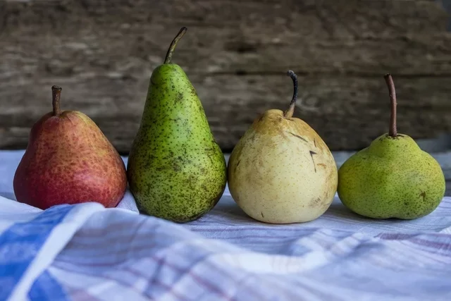
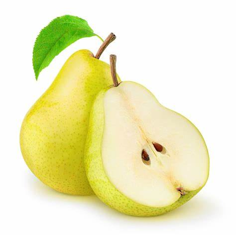
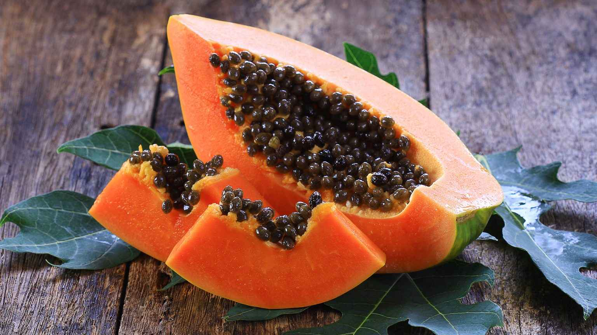
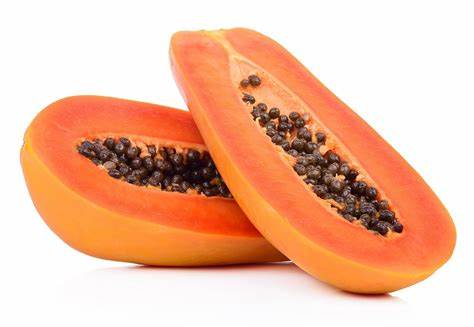
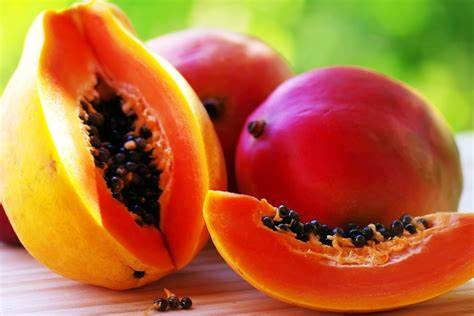

A laranja é uma fruta rica em fibras, vitaminas A, vitamina C, flavonoides e betacaroteno com propriedades antioxidantes e anti-inflamatórias, que auxiliam no combate ao envelhecimento precoce, ajudam a reduzir o colesterol ruim, protegendo de doenças cardiovasculares, e fortalecem o sistema imunológico. Além disso, a laranja também possui minerais como potássio e cálcio, necessários para a regulação da pressão arterial.
Uma boa forma de obter esses benefícios, é consumir pelo menos 1 laranja por dia ou 150 mL do suco natural, que é muito rico em nutrientes mas tem a desvantagem de não possuir as fibras que existem na fruta crua. Além disso, a laranja adicionada em receitas cozidas ou que vão ao forno tem menos nutrientes que a fruta crua.
Benefícios da laranja para a saúde
Os principais benefícios da laranja para a saúde são:
1. Melhora o funcionamento do sistema digestivo
A laranja é uma fruta muito rica em fibras como pectina, celulose e hemicelulose, que auxiliam na digestão e ajudam o intestino a funcionar melhor, aumentando a formação do bolo fecal e acelerando o trânsito intestinal, sendo muito útil para combater a prisão de ventre.
Além disso, a pectina presente na laranja age absorvendo água do trato digestivo formando um gel que auxilia na digestão e ajuda o intestino a funcionar melhor.
2. Protege contra doenças cardiovasculares
As fibras presentes na laranja, principalmente a pectina, ajudam na redução do colesterol ruim e dos triglicerídeos, que são responsáveis por formar placas de gordura nas artérias, pois diminuem a absorção de gorduras provenientes da alimentação, o que ajuda a reduzir o risco de doenças cardiovasculares como infarto, insuficiência cardíaca e derrame cerebral.
Além disso, a laranja é rica em flavonoides, como a hesperidina, e vitamina C, com efeitos antioxidantes potentes, que agem reduzindo os danos nas células causados pelos radicais livres, mantendo os vasos sanguíneos saudáveis.
3. Controla a pressão alta
A laranja contém grandes quantidades de potássio, que é um mineral que ajuda a aumentar o relaxamento dos vasos sanguíneos, permitindo que o sangue circule com mais facilidade, ajudando a diminuir a pressão arterial, o que pode ser muito útil para pessoas que têm pressão alta.
4. Ajuda a controlar a glicemia
A laranja é rica em fibras na sua composição que ajudam a reduzir a absorção de açúcar da alimentação pelo intestino e a controlar os níveis de glicemia, podendo ser um importante aliado no tratamento da diabetes, desde que consumida de acordo com a orientação do nutricionista, pois também é rica em açúcar.
5. Fortalece o sistema imunológico
A laranja é rica em nutrientes como vitamina A, vitamina C, e folato, que estimulam a produção de glóbulos brancos que são células de defesa essenciais para prevenir e combater infecções e, por isso, a laranja ajuda a fortalecer o sistema imune.
Pera


A pera é uma fruta com boas quantidades de pectina, um tipo de fibra que aumenta o volume das fezes e estimula os movimentos naturais do intestino, facilitando a eliminação das fezes e ajudando, assim, a combater a prisão de ventre.
Por conter boas quantidades de fibras, a pera também diminui a velocidade de digestão dos alimentos, prolongando a saciedade e diminuindo a vontade de comer, facilitando a perda de peso.
Existem diferentes tipos de pera, como Williams, portuguesa e d’água, que se diferenciam na textura, na cor e no tamanho, e que podem ser consumidas ao natural ou usadas em preparações, como sucos, doces, bolos e cozida.
Principais benefícios
Os principais benefícios do consumo da pera para a saúde são:
1. Controlar a glicose
A pera é uma fruta com baixo índice glicêmico, ajudando a diminuir a velocidade de absorção do açúcar dos alimentos, promovendo o controle dos níveis de glicose no sangue e evitando, assim, a resistência à insulina e a diabetes.
2. Combater a prisão de ventre
A pera, principalmente quando é consumida com a casca, tem boas quantidades de fibras, que aumentam o volume das fezes e estimulam os movimentos naturais do intestino, ajudando a combater a prisão de ventre.
3. Fortalecer o sistema imune
A pera contém epicatequina, catequina e ácido cafeico, antioxidantes que combatem os radicais livres no organismo, além de melhorarem as funções das células do sistema imunológico contra infecções, evitando, assim, o surgimento de alergias, gripes e resfriados.
4. Evitar doenças cardiovasculares
A pera tem boas quantidades de potássio, um mineral que favorece o relaxamento das artérias, facilitando a circulação de sangue, além de ajudar na eliminação do excesso de sódio do organismo, ajudando a evitar a pressão alta.
Por ter boas quantidades de antioxidantes, a pera também evita a oxidação das células de gordura, equilibrando os níveis de colesterol e triglicerídeos no sangue e evitando, assim, problemas como trombose, infarto e derrame.
5. Previne o envelhecimento precoce
A pera ajuda a prevenir o envelhecimento precoce, porque contém flavonoides, antioxidantes que protegem o organismo contra os radicais livres, que são os principais responsáveis pelos danos nas células da pele, evitando o surgimento de rugas e flacidez.
Mamão



O mamão é uma fruta rica em vitamina C, vitamina A e betacaroteno, nutrientes com propriedades antioxidantes, anti-inflamatórias e imunomoduladoras, ajudando no controle da pressão arterial, na redução do colesterol sanguíneo e no fortalecimento do sistema imunológico.
Além disso, o mamão também ajuda a combater a prisão de ventre, porque contém boas quantidades de fibras que aumentam o volume das fezes e estimulam os movimentos naturais do intestino.
Os principais tipos de mamão são o papaia e o formosa, que possuem propriedades semelhantes e se diferenciam quanto ao tamanho e o formato. Essa fruta pode ser consumida ao natural ou usada no preparo de vitaminas, sucos e doces. Já as sementes do mamão podem ser adicionadas em saladas ou iogurtes.
Principais benefícios
Os principais benefícios do Mamão são:
1. Combate a prisão de ventre
O mamão contém boas quantidades de fibras insolúveis, um tipo de fibra que aumenta o volume das fezes e estimula os movimentos naturais do intestino, facilitando a evacuação e combatendo a prisão de ventre.
2. Melhora a digestão
Tanto o mamão verde como as sementes de mamão contêm um látex rico em papaína, uma enzima com ação proteolítica que atua no estômago com efeito semelhante ao suco gástrico, melhorando a digestão das proteínas.
Além disso, a papaína presente no mamão também possui propriedades anti-inflamatórias e cicatrizantes, ajudando no tratamento de úlceras e gastrites
3. Diminui o colesterol e triglicerídeos
Por ter boas quantidades de fibras, o mamão reduz a absorção no intestino de gordura dos alimentos, diminuindo os níveis de colesterol total e triglicerídeos no sangue, prevenindo, assim, doenças como aterosclerose e infarto.
Além disso, o mamão é rico em vitamina A e betacaroteno, compostos bioativos com ação antioxidante que combatem os radicais livres e impedem a oxidação das células de gordura, diminuindo, assim, os níveis de colesterol "ruim", o LDL, no sangue.
4. Mantém a saúde dos olhos
O mamão é rico em luteína e zeaxantina, carotenoides que protegem a retina dos olhos contra os danos causados pelos radicais livres, mantendo a saúde dos olhos e prevenindo, assim, situações como degeneração macular induzida pelo envelhecimento e catarata.
5. Fortalece o sistema imunológico
Por ter ótimas quantidades de vitamina C, vitamina A e carotenoides, compostos com ação antioxidante e anti-inflamatória, o mamão fortalece o sistema imunológico, ajudando a combater vírus, bactérias e fungos.